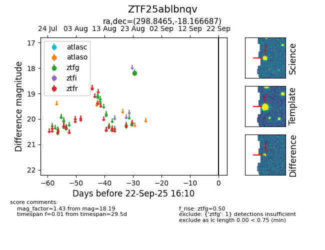

FINK: ZTF25ablbnqv
Lasair: ZTF25ablbnqv
ALeRCE: ZTF25ablbnqv
ZTF25ablbnqv (ztf,fink)
equatorial (ra, dec) = (298.8465,-18.16669)
galactic (l, b) = (23.1086,-22.02862)

last ztfg=18.19
1 ztfg detections